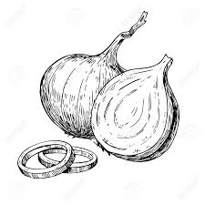

Photos
If you’re looking for a new challenge, try underwater photography. Underwater shots can look stunning, but they’re also difficult to pull off. Since water can totally change the way light and color appear in a photo, it forces you to rethink
your usual techniques and compositions. If you’re disappointed by your first few tries, here